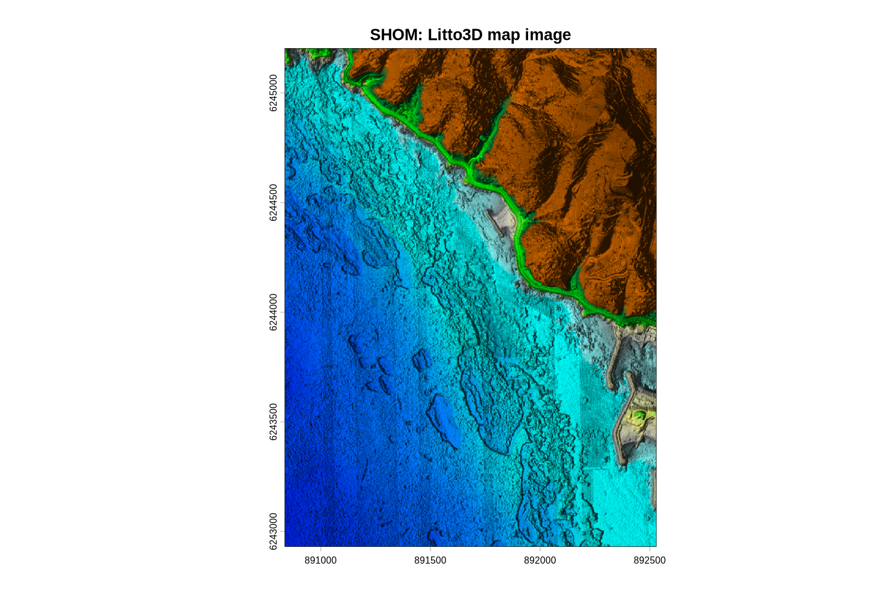
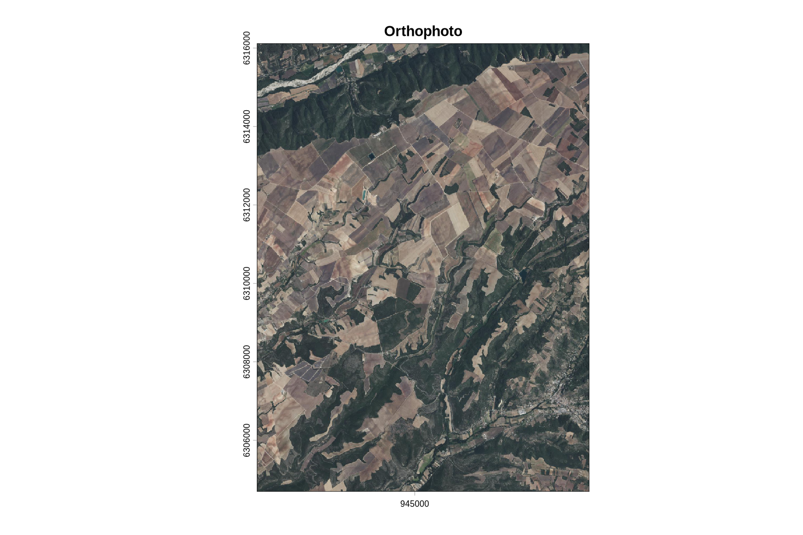
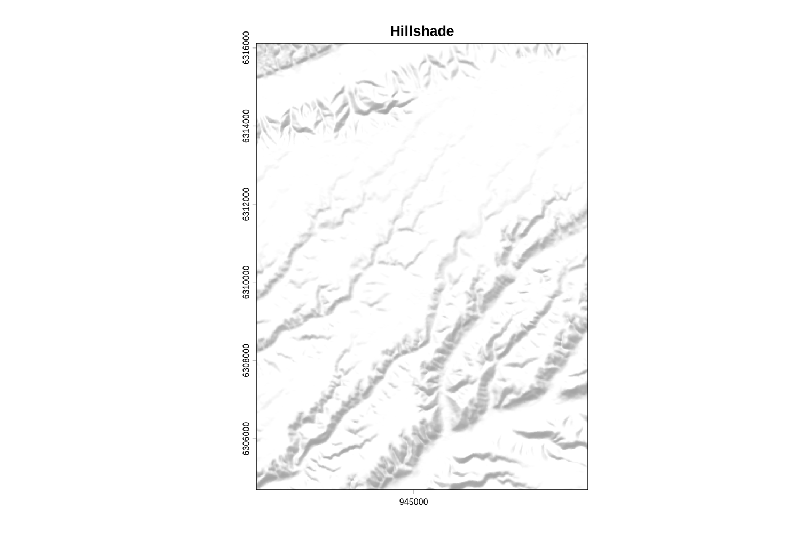
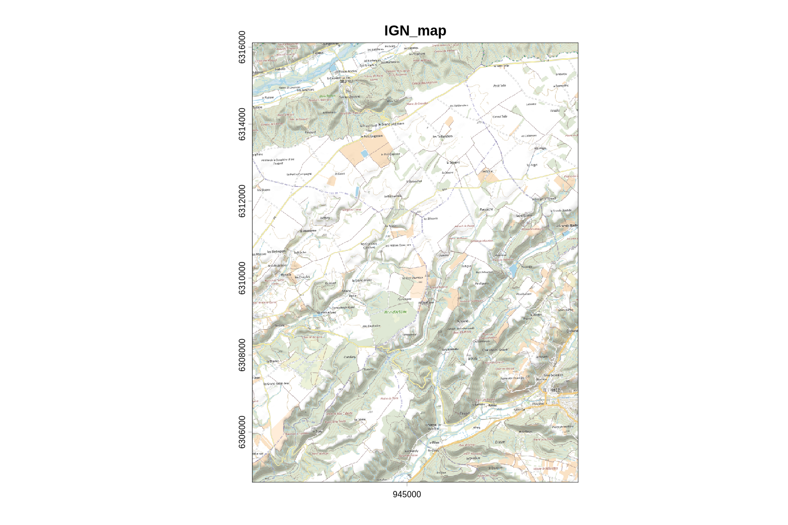
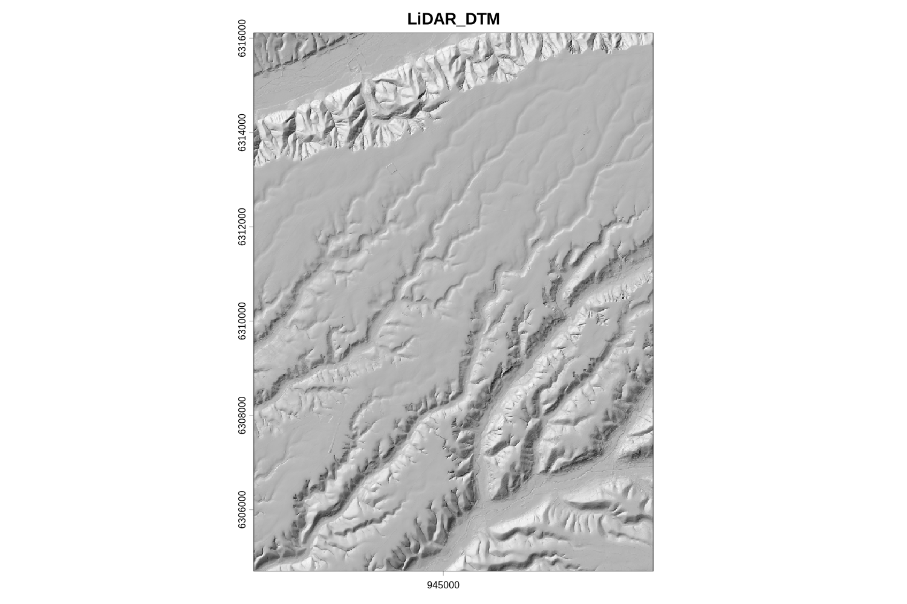
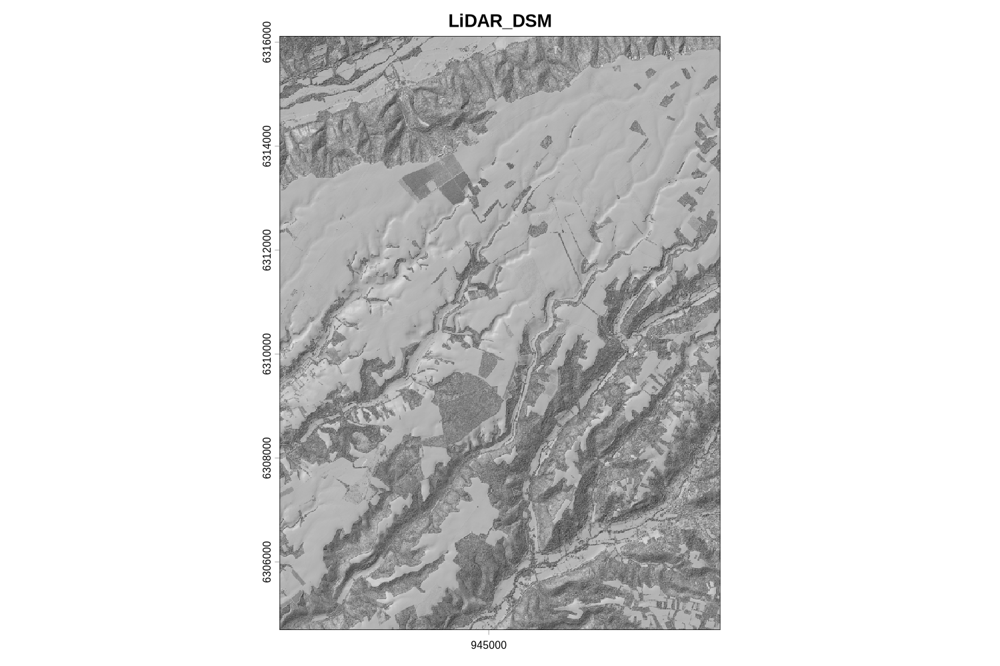
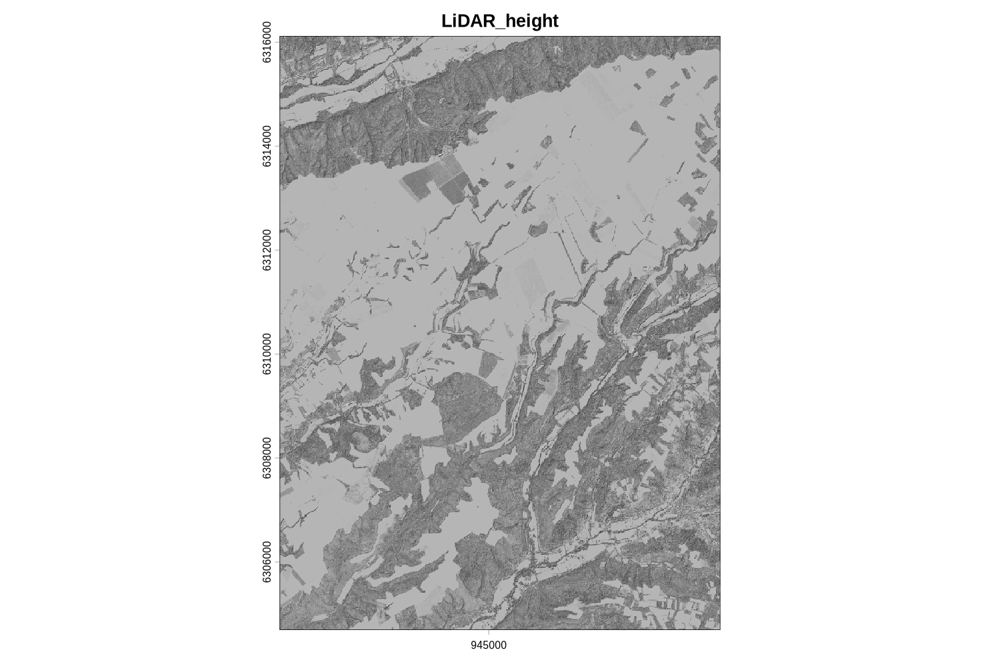

Learning objectives
- Inspect a service with GetCapabilities and identify a valid layer.
- Construct GetMap with the correct extent, CRS and image size.
- Download a map image and restore its known spatial metadata.
- Compare IGN map sources and LiDAR-derived MNT, MNS and MNH views.
- Distinguish a rendered map, an elevation raster and a LiDAR point cloud.
terra and xml2 if needed. Download the complete R script ↓. Rebuild the saved figures with source("scripts/04-render-blocks.R").What does a WMS provide?
A Web Map Service supplies a map rendered for a requested place, size, CRS and style. Its PNG channels record a visual representation. To calculate slopes or terrain statistics, obtain a numerical elevation model; to analyse individual laser returns, obtain the point cloud.
| Resource | What you receive | Appropriate use |
|---|---|---|
| WMS image | Rendered pixels, often RGB/RGBA. | Visual context, interpretation and map display. |
| Numerical MNT/DTM raster | A georeferenced grid of elevation values. | Terrain derivatives and quantitative analysis. |
| LiDAR point cloud | Individual 3D points and associated attributes or classes. | Point-level structure, classification and 3D analysis. |
Function names in the code link to their documentation. In RStudio use, for example, help("plotRGB", package = "terra"). The two helpers defined in this lesson link back to their definitions.
4.1 · Prepare the WMS workflow
Why this step?
Load terra for spatial data and xml2 for XML metadata. Service endpoints identify where requests are sent. Create folders so the response files and exported results have predictable locations.
# WMS returns styled map images; XML describes the available service.
library(terra)
library(xml2)
options(timeout = 120)
dir.create("outputs", showWarnings = FALSE)
dir.create("data/wms", recursive = TRUE, showWarnings = FALSE)
shom_url <- "https://services.data.shom.fr/INSPIRE/wms/r?"
ign_url <- "https://data.geopf.fr/wms-r?"
Why these functions?
library()— Load terra for spatial data and xml2 for service metadata.options()— Allow enough time for the server to prepare a requested image.dir.create()— Create folders before saving responses and derived files.
Result of running this code in R
R console output
[Completed successfully; no console output returned by this block.]
How to read the result. Open the course repository as an RStudio project. Install terra and xml2 once if necessary. An internet connection is needed to retrieve fresh responses; the figures embedded on this page are already saved.
4.1.1 · Ask what the service provides
Why this step?
GetCapabilities returns the service description as XML: available layers, request types, formats and spatial references. Parsing it makes these properties searchable. Removing namespaces here simplifies the XPath expressions used in this introductory example; it only changes the local parsed document.
# Download the service description before constructing a map request.
capabilities_url <- paste0(shom_url,
"SERVICE=WMS&VERSION=1.3.0&REQUEST=GetCapabilities")
download.file(capabilities_url, "data/wms/shom-capabilities.xml",
mode = "wb", quiet = TRUE)
cap <- read_xml("data/wms/shom-capabilities.xml")
xml_ns_strip(cap)
layer_names <- xml_text(xml_find_all(cap, ".//Layer/Name"))
head(layer_names)
length(layer_names)
Why these functions?
paste0()— Append query text to an endpoint and construct output filenames.download.file()— Retrieve the capabilities XML or a requested map image to disk.read_xml()— Parse the GetCapabilities XML into a searchable document.xml_ns_strip()— Remove XML namespace prefixes in this local parsed document for simpler XPath examples.xml_text()— Extract readable identifiers and values from matched XML nodes.xml_find_all()— Find all layer names, formats or CRS declarations that match an XPath query.head()— Preview layer identifiers without printing the whole catalogue.length()— Count the advertised layers or the retrieved comparison images.
Result of running this code in R
R console output
[1] "BATHYELLI_ZH_PYR_PNG_3857_WMSR" [2] "CABLES_PYR-PNG_WLD_3857_WMSR" [3] "COURANTS2D_WMSR_VMAX_3857" [4] "COURANTS_3D_FROMVEUR_10M_FOND_WMSR_3857" [5] "COURANTS_3D_FROMVEUR_FOND_WMSR_3857" [6] "COURANTS_3D_FROMVEUR_MI_PROF_WMSR_3857" [1] 89
How to read the result. The printed strings are machine-readable layer identifiers. A layer title intended for people is not necessarily a valid LAYERS parameter.
4.1.2 · Check the layer, CRS, format and size limits
Why this step?
Select the exact Litto3D layer. The XPath expression combines CRS entries declared on the layer itself and its ancestors, because WMS layer properties can be inherited. Check that EPSG:2154 and PNG are available before asking for a map.
# Verify the exact layer identifier and inherited coordinate systems.
shom_layer <- "LITTO3D_PACA_2015_PYR_3857_WMSR"
layer <- xml_find_first(cap, paste0(".//Layer[Name='", shom_layer, "']"))
xml_text(xml_find_first(layer, "Title"))
supported_crs <- xml_text(xml_find_all(layer, "./CRS | ancestor::Layer/CRS"))
formats <- xml_text(xml_find_all(cap, ".//Request/GetMap/Format"))
max_width <- as.integer(xml_text(xml_find_first(cap, ".//Service/MaxWidth")))
max_height <- as.integer(xml_text(xml_find_first(cap, ".//Service/MaxHeight")))
stopifnot(shom_layer %in% layer_names, "EPSG:2154" %in% supported_crs,
"image/png" %in% formats)
c(max_width = max_width, max_height = max_height)
Why these functions?
xml_find_first()— Select the metadata node for one exact layer identifier or server limit.paste0()— Append query text to an endpoint and construct output filenames.xml_text()— Extract readable identifiers and values from matched XML nodes.xml_find_all()— Find all layer names, formats or CRS declarations that match an XPath query.as.integer()— Express image dimensions and server limits as whole pixel counts.stopifnot()— Fail clearly when a service, response or grid check is not satisfied.c()— Collect bounds, dimensions, channel settings or layer identifiers.
Result of running this code in R
R console output
[1] "Litto3D® - Provence-Alpes-Côte d'Azur"
max_width max_height
10000 10000
How to read the result. The size limits come from the downloaded capabilities, not a universal WMS rule. A published layer can still have limited coverage or service availability.
4.1.3 · Define the extent and requested pixel size
Why this step?
The Marseille study rectangle starts as longitude–latitude bounds, then is transformed to Lambert-93. Rounding lower edges down and upper edges up aligns the rectangle to a 2 m grid. Width and height are calculated from that aligned extent.
# Set a small Marseille coastal extent and align its grid to 2 m.
ext_ll <- ext(5.35, 5.37, 43.26, 43.28)
ext_initial <- project(ext_ll, from = "EPSG:4326", to = "EPSG:2154")
target_resolution <- 2
ext_map <- ext(
floor(ext_initial[1] / target_resolution) * target_resolution,
ceiling(ext_initial[2] / target_resolution) * target_resolution,
floor(ext_initial[3] / target_resolution) * target_resolution,
ceiling(ext_initial[4] / target_resolution) * target_resolution)
width <- as.integer(round((ext_map[2] - ext_map[1]) / target_resolution))
height <- as.integer(round((ext_map[4] - ext_map[3]) / target_resolution))
stopifnot(width <= max_width, height <= max_height)
data.frame(edge = c("xmin", "xmax", "ymin", "ymax"),
initial = as.vector(ext_initial), aligned = as.vector(ext_map))
c(width = width, height = height)
Why these functions?
ext()— Define the study rectangle and restore its known bounds on the PNG.project()— Transform the requested rectangle from longitude–latitude to Lambert-93.floor()— Round lower grid bounds outward to a whole resolution step.ceiling()— Round upper grid bounds outward to the next whole resolution step.as.integer()— Express image dimensions and server limits as whole pixel counts.round()— Turn extent length divided by pixel size into pixel dimensions.stopifnot()— Fail clearly when a service, response or grid check is not satisfied.data.frame()— Organise bounds, layer labels and request records into tables.c()— Collect bounds, dimensions, channel settings or layer identifiers.as.vector()— Expose extent bounds as ordinary numbers for the alignment table.
Result of running this code in R
R console output
edge initial aligned xmin xmin 890837.8 890836 xmax xmax 892528.2 892530 ymin ymin 6242931.4 6242930 ymax ymax 6245202.3 6245204 width height 847 1137
How to read the result. Compare the original and aligned bounds. The image size describes the requested map grid. Asking for smaller pixels does not create additional accuracy in the underlying source data.
4.1.4 · Build a GetMap request
Why this step?
A named list separates the endpoint from its query parameters. For EPSG:2154 in WMS 1.3.0, BBOX is written as xmin,ymin,xmax,ymax. The helper converts values to text, encodes reserved characters and joins name=value pairs using &.
# In EPSG:2154, WMS BBOX order is xmin,ymin,xmax,ymax.
params <- list(SERVICE = "WMS", VERSION = "1.3.0", REQUEST = "GetMap",
LAYERS = shom_layer, STYLES = "", CRS = "EPSG:2154",
BBOX = paste(ext_map[c(1, 3, 2, 4)], collapse = ","),
WIDTH = width, HEIGHT = height, FORMAT = "image/png")
# A small helper reuses the same URL-encoding procedure for every layer.
build_wms_url <- function(base, parameters) {
values <- vapply(parameters, as.character, character(1))
paste0(base, paste(names(parameters), URLencode(values, reserved = TRUE),
sep = "=", collapse = "&"))
}
map_url <- build_wms_url(shom_url, params)
cat(map_url, "\n")
Why these functions?
list()— Keep the named WMS parameters together before building a request.paste()— Join bounds in WMS order or join the encoded query parameters.c()— Collect bounds, dimensions, channel settings or layer identifiers.vapply()— Convert every WMS parameter to text with a consistent output type.character()— Specify that URL parameter conversion must return one text value.paste0()— Append query text to an endpoint and construct output filenames.names()— Read parameter names or comparison labels while repeating the workflow.URLencode()— Encode parameter values so reserved URL characters are transmitted correctly.build_wms_url()— Reuse one named-parameter encoding procedure to construct consistent GetMap URLs.cat()— Print the complete GetMap URL so it can be inspected or opened.
| Representation | Coordinate order |
|---|---|
terra::ext() | xmin, xmax, ymin, ymax |
| WMS 1.3.0, EPSG:2154 | xmin, ymin, xmax, ymax |
| WMS 1.3.0, EPSG:4326 | latitude minimum, longitude minimum, latitude maximum, longitude maximum |
WMS axis order depends on the version and CRS. In version 1.3.0, EPSG:4326 uses latitude–longitude ordering; do not copy the Lambert-93 order without checking.
Result of running this code in R
R console output
https://services.data.shom.fr/INSPIRE/wms/r?SERVICE=WMS&VERSION=1.3.0&REQUEST=GetMap&LAYERS=LITTO3D_PACA_2015_PYR_3857_WMSR&STYLES=&CRS=EPSG%3A2154&BBOX=890836%2C6242930%2C892530%2C6245204&WIDTH=847&HEIGHT=1137&FORMAT=image%2Fpng
How to read the result. Inspect the complete URL. WIDTH and HEIGHT are pixel counts, CRS identifies their coordinate framework, and BBOX defines the ground rectangle. STYLES is intentionally empty to request the default published style.
4.1.5 · Download and inspect the map image
Why this step?
A server may return an XML or HTML error document even when a file was saved with a .png extension. The PNG signature check detects that mismatch before importing the response. A normal PNG contains image channels, but usually no embedded CRS or geographic bounds.
# Verify that the response is a PNG, not an XML/HTML error page.
shom_png <- "data/wms/shom-litto3d.png"
download.file(map_url, shom_png, mode = "wb", quiet = TRUE)
png_signature <- as.raw(c(137, 80, 78, 71, 13, 10, 26, 10))
stopifnot(identical(readBin(shom_png, "raw", n = 8), png_signature))
tile <- rast(shom_png)
print(tile)
Why these functions?
download.file()— Retrieve the capabilities XML or a requested map image to disk.as.raw()— Represent the expected PNG signature as bytes.c()— Collect bounds, dimensions, channel settings or layer identifiers.stopifnot()— Fail clearly when a service, response or grid check is not satisfied.identical()— Confirm that the first eight response bytes match a PNG file.readBin()— Read the PNG signature to detect a non-image error response.rast()— Read a downloaded PNG or reopen the exported GeoTIFF.print()— Inspect the imported image before assigning its spatial metadata.
Result of running this code in R
R console output
class : SpatRaster size : 1137, 847, 4 (nrow, ncol, nlyr) resolution : 1, 1 (x, y) extent : 0, 847, 0, 1137 (xmin, xmax, ymin, ymax) coord. ref. : source : shom-litto3d.png names : shom-litto3d_1, shom-litto3d_2, shom-litto3d_3, shom-litto3d_4
How to read the result. The missing-extent message at import is expected for this image. Its initial coordinates describe pixel indices. Those are not yet the requested Lambert-93 coordinates.
4.1.6 · Restore the requested spatial metadata
Why this step?
The request already establishes the image’s extent and CRS. Assigning that known information georeferences the returned pixels without transforming or resampling them. The display helper handles RGB, RGBA and grayscale responses, including transparency.
# Assign the geographic metadata that belongs to this requested image.
ext(tile) <- ext_map
crs(tile) <- "EPSG:2154"
res(tile)
# RGB/RGBA and grayscale WMS images require different display methods.
show_wms <- function(image, label) {
if (nlyr(image) >= 3) {
alpha_band <- if (nlyr(image) == 4) 4 else NULL
plotRGB(image, a = alpha_band, axes = TRUE, mar = c(3, 4, 3, 1),
main = label, smooth = FALSE)
} else {
gray_image <- image[[1]]
if (nlyr(image) == 2) gray_image[image[[2]] == 0] <- NA
plot(gray_image, col = gray(seq(0, 1, length.out = 256)),
range = c(0, 255), legend = FALSE, main = label)
}
}
show_wms(tile, "SHOM: Litto3D map image")
Why these functions?
ext()— Define the study rectangle and restore its known bounds on the PNG.crs()— Assign the CRS used in the request to the returned image grid.res()— Inspect pixel size after georeferencing and after export.nlyr()— Choose RGB/RGBA or grayscale rendering from the image’s band count.plotRGB()— Combine red, green and blue image channels and honour alpha transparency.c()— Collect bounds, dimensions, channel settings or layer identifiers.plot()— Display the first channel of a grayscale WMS response.gray()— Display grayscale hillshade channels without inventing a colour scale.seq()— Generate a complete grayscale display palette.show_wms()— Choose RGB/RGBA or grayscale display from the downloaded image’s actual channels.
Result of running this code in R

R console output
[1] 2 2
How to read the result. The axes are now Lambert-93 coordinates. Litto3D is shown through the publisher’s rendered style: these stored image channels are colours, not an analytical elevation grid. Source: SHOM, Litto3D Provence-Alpes-Côte d’Azur.
4.2 · Inspect the IGN services and LiDAR layers
Why this step?
Repeat GetCapabilities for the IGN Géoplateforme. Select orthophotography, general hillshade, the IGN map, and three LiDAR-derived views. Check the exact identifiers and their inherited CRS declarations before issuing the comparison requests.
# Inspect IGN capabilities and select six advertised layers.
ign_cap_url <- paste0(ign_url,
"SERVICE=WMS&VERSION=1.3.0&REQUEST=GetCapabilities")
download.file(ign_cap_url, "data/wms/ign-capabilities.xml",
mode = "wb", quiet = TRUE)
ign_cap <- read_xml("data/wms/ign-capabilities.xml")
xml_ns_strip(ign_cap)
ign_names <- xml_text(xml_find_all(ign_cap, ".//Layer/Name"))
ign_layers <- c(
Orthophoto = "ORTHOIMAGERY.ORTHOPHOTOS",
Hillshade = "ELEVATION.ELEVATIONGRIDCOVERAGE.SHADOW",
IGN_map = "GEOGRAPHICALGRIDSYSTEMS.PLANIGNV2",
LiDAR_DTM = "IGNF_LIDAR-HD_MNT_ELEVATION.ELEVATIONGRIDCOVERAGE.SHADOW",
LiDAR_DSM = "IGNF_LIDAR-HD_MNS_ELEVATION.ELEVATIONGRIDCOVERAGE.SHADOW",
LiDAR_height = "IGNF_LIDAR-HD_MNH_ELEVATION.ELEVATIONGRIDCOVERAGE.SHADOW")
stopifnot(all(ign_layers %in% ign_names))
for (name in names(ign_layers)) {
node <- xml_find_first(ign_cap, paste0(".//Layer[Name='", ign_layers[[name]], "']"))
inherited <- xml_text(xml_find_all(node, "./CRS | ancestor::Layer/CRS"))
stopifnot("EPSG:2154" %in% inherited)
}
data.frame(label = names(ign_layers), layer = unname(ign_layers))
Why these functions?
paste0()— Append query text to an endpoint and construct output filenames.download.file()— Retrieve the capabilities XML or a requested map image to disk.read_xml()— Parse the GetCapabilities XML into a searchable document.xml_ns_strip()— Remove XML namespace prefixes in this local parsed document for simpler XPath examples.xml_text()— Extract readable identifiers and values from matched XML nodes.xml_find_all()— Find all layer names, formats or CRS declarations that match an XPath query.c()— Collect bounds, dimensions, channel settings or layer identifiers.stopifnot()— Fail clearly when a service, response or grid check is not satisfied.all()— Require every chosen IGN layer to appear in the advertised layer list.names()— Read parameter names or comparison labels while repeating the workflow.xml_find_first()— Select the metadata node for one exact layer identifier or server limit.data.frame()— Organise bounds, layer labels and request records into tables.unname()— Present layer identifiers without carrying their vector labels into the table.
Result of running this code in R
R console output
label layer 1 Orthophoto ORTHOIMAGERY.ORTHOPHOTOS 2 Hillshade ELEVATION.ELEVATIONGRIDCOVERAGE.SHADOW 3 IGN_map GEOGRAPHICALGRIDSYSTEMS.PLANIGNV2 4 LiDAR_DTM IGNF_LIDAR-HD_MNT_ELEVATION.ELEVATIONGRIDCOVERAGE.SHADOW 5 LiDAR_DSM IGNF_LIDAR-HD_MNS_ELEVATION.ELEVATIONGRIDCOVERAGE.SHADOW 6 LiDAR_height IGNF_LIDAR-HD_MNH_ELEVATION.ELEVATIONGRIDCOVERAGE.SHADOW
How to read the result. MNT means terrain model (DTM); MNS means surface model (DSM); MNH means above-ground height model. Here they are selected as rendered WMS layers, not as downloadable numerical models.
4.2.1 · Use a common grid for comparison
Why this step?
Every comparison uses the same small area in Alpes-de-Haute-Provence, CRS, bounds, width and height. This isolates the content and style of each layer rather than changing location or map scale between views.
# Use one identical grid for all six IGN renderings.
comparison_ll <- ext(6, 6.1, 43.8, 43.9)
comparison_initial <- project(comparison_ll, from = "EPSG:4326", to = "EPSG:2154")
comparison_resolution <- 10
comparison_extent <- ext(
floor(comparison_initial[1] / comparison_resolution) * comparison_resolution,
ceiling(comparison_initial[2] / comparison_resolution) * comparison_resolution,
floor(comparison_initial[3] / comparison_resolution) * comparison_resolution,
ceiling(comparison_initial[4] / comparison_resolution) * comparison_resolution)
comparison_width <- as.integer(round((comparison_extent[2] - comparison_extent[1]) / comparison_resolution))
comparison_height <- as.integer(round((comparison_extent[4] - comparison_extent[3]) / comparison_resolution))
ign_max_width <- as.integer(xml_text(xml_find_first(ign_cap, ".//Service/MaxWidth")))
ign_max_height <- as.integer(xml_text(xml_find_first(ign_cap, ".//Service/MaxHeight")))
stopifnot(comparison_width <= ign_max_width, comparison_height <= ign_max_height)
c(width = comparison_width, height = comparison_height,
requested_metres_per_pixel = comparison_resolution)
Why these functions?
ext()— Define the study rectangle and restore its known bounds on the PNG.project()— Transform the requested rectangle from longitude–latitude to Lambert-93.floor()— Round lower grid bounds outward to a whole resolution step.ceiling()— Round upper grid bounds outward to the next whole resolution step.as.integer()— Express image dimensions and server limits as whole pixel counts.round()— Turn extent length divided by pixel size into pixel dimensions.xml_text()— Extract readable identifiers and values from matched XML nodes.xml_find_first()— Select the metadata node for one exact layer identifier or server limit.stopifnot()— Fail clearly when a service, response or grid check is not satisfied.c()— Collect bounds, dimensions, channel settings or layer identifiers.
Result of running this code in R
R console output
width height
847 1143
requested_metres_per_pixel
10
How to read the result. All six map requests use a 10 m display grid. This is a viewing choice for the exercise, not a statement of the native LiDAR product resolution or measurement accuracy.
4.2.2 · Compare map sources and LiDAR products
Why this step?
The loop requests each layer, checks the image signature, assigns its known grid and stores the result. Checking variation across all channels matters: some hillshade overlays use black RGB values and a varying alpha channel to encode shading. The UTC request log records the actual retrieval.
Code to request all six comparison layers
# Retrieve, georeference and display each map on the common grid.
comparison_tiles <- list()
request_log <- data.frame()
for (label in names(ign_layers)) {
p <- list(SERVICE = "WMS", VERSION = "1.3.0", REQUEST = "GetMap",
LAYERS = ign_layers[[label]], STYLES = "", CRS = "EPSG:2154",
BBOX = paste(comparison_extent[c(1, 3, 2, 4)], collapse = ","),
WIDTH = comparison_width, HEIGHT = comparison_height, FORMAT = "image/png")
request <- build_wms_url(ign_url, p)
path <- paste0("data/wms/ign-", label, ".png")
download.file(request, path, mode = "wb", quiet = TRUE)
stopifnot(identical(readBin(path, "raw", n = 8), png_signature))
image <- rast(path)
ext(image) <- comparison_extent
crs(image) <- "EPSG:2154"
stopifnot(any(global(image, "sd", na.rm = TRUE)[, 1] > 0))
comparison_tiles[[label]] <- image
request_log <- rbind(request_log, data.frame(label = label,
layer = ign_layers[[label]], url = request,
retrieved_utc = format(Sys.time(), tz = "UTC", usetz = TRUE)))
show_wms(image, label)
}
Why these functions?
list()— Keep the named WMS parameters together before building a request.data.frame()— Organise bounds, layer labels and request records into tables.names()— Read parameter names or comparison labels while repeating the workflow.paste()— Join bounds in WMS order or join the encoded query parameters.c()— Collect bounds, dimensions, channel settings or layer identifiers.build_wms_url()— Reuse one named-parameter encoding procedure to construct consistent GetMap URLs.paste0()— Append query text to an endpoint and construct output filenames.download.file()— Retrieve the capabilities XML or a requested map image to disk.stopifnot()— Fail clearly when a service, response or grid check is not satisfied.identical()— Confirm that the first eight response bytes match a PNG file.readBin()— Read the PNG signature to detect a non-image error response.rast()— Read a downloaded PNG or reopen the exported GeoTIFF.ext()— Define the study rectangle and restore its known bounds on the PNG.crs()— Assign the CRS used in the request to the returned image grid.any()— Check variation across all channels, including the alpha channel used by transparent hillshade overlays.global()— Check that a returned map has varying pixels rather than a uniform blank response.rbind()— Append one request record for each retrieved comparison layer.format()— Write an unambiguous UTC retrieval timestamp.Sys.time()— Record when each live map response was retrieved.show_wms()— Choose RGB/RGBA or grayscale display from the downloaded image’s actual channels.
Result of running this code in R
Select a tab to display its map and open its R code.
BRGM Geological Map · 1:50,000
This tab requests the published geological map on the same Lambert-93 grid as the IGN views. Colours identify geological map units; they are not elevations. Consult the source map legend and notice for interpretation.
Code R
# BRGM printed geological map, published scale 1:50,000
# Run after scripts/04-wms.R, in the same R session.
brgm_url <- "https://mapsref.brgm.fr/wxs/referentiel/geologie?"
brgm_cap_url <- paste0(brgm_url,
"SERVICE=WMS&VERSION=1.3.0&REQUEST=GetCapabilities")
download.file(brgm_cap_url, "data/wms/brgm-capabilities.xml", mode = "wb")
brgm_cap <- read_xml("data/wms/brgm-capabilities.xml")
xml_ns_strip(brgm_cap)
brgm_layer <- "SCAN_GEOL50"
node <- xml_find_first(brgm_cap, paste0(".//Layer[Name='", brgm_layer, "']"))
crs_available <- xml_text(xml_find_all(node, "./CRS | ancestor::Layer/CRS"))
stopifnot("EPSG:2154" %in% crs_available)
brgm_params <- list(SERVICE = "WMS", VERSION = "1.3.0", REQUEST = "GetMap",
LAYERS = brgm_layer, STYLES = "", CRS = "EPSG:2154",
BBOX = paste(comparison_extent[c(1, 3, 2, 4)], collapse = ","),
WIDTH = comparison_width, HEIGHT = comparison_height, FORMAT = "image/png")
brgm_request <- build_wms_url(brgm_url, brgm_params)
download.file(brgm_request, "data/wms/brgm-geology.png", mode = "wb")
stopifnot(identical(readBin("data/wms/brgm-geology.png", "raw", n = 8), png_signature))
brgm_image <- rast("data/wms/brgm-geology.png")
ext(brgm_image) <- comparison_extent
crs(brgm_image) <- "EPSG:2154"
show_wms(brgm_image, "BRGM geological map: 1:50,000")
Download the BRGM R example ↓ · BRGM maps, legends and notices ↗
When this tab opens, the page will try to load the map directly from the BRGM service. This live response has not been verified from this environment.
The service did not return a displayable image. Open the GetMap request directly ↗ or check the official BRGM service catalogue.
Orthophoto
Code
# Orthophoto: same Lambert-93 grid as the other comparison maps
label <- "Orthophoto"
p <- list(SERVICE = "WMS", VERSION = "1.3.0", REQUEST = "GetMap",
LAYERS = "ORTHOIMAGERY.ORTHOPHOTOS", STYLES = "", CRS = "EPSG:2154",
BBOX = paste(comparison_extent[c(1, 3, 2, 4)], collapse = ","),
WIDTH = comparison_width, HEIGHT = comparison_height, FORMAT = "image/png")
request <- build_wms_url(ign_url, p)
path <- paste0("data/wms/ign-", label, ".png")
download.file(request, path, mode = "wb", quiet = TRUE)
stopifnot(identical(readBin(path, "raw", n = 8), png_signature))
image <- rast(path)
ext(image) <- comparison_extent
crs(image) <- "EPSG:2154"
show_wms(image, label)
IGN Alti Shaded Relief
Code
# Hillshade: same Lambert-93 grid as the other comparison maps
label <- "Hillshade"
p <- list(SERVICE = "WMS", VERSION = "1.3.0", REQUEST = "GetMap",
LAYERS = "ELEVATION.ELEVATIONGRIDCOVERAGE.SHADOW", STYLES = "", CRS = "EPSG:2154",
BBOX = paste(comparison_extent[c(1, 3, 2, 4)], collapse = ","),
WIDTH = comparison_width, HEIGHT = comparison_height, FORMAT = "image/png")
request <- build_wms_url(ign_url, p)
path <- paste0("data/wms/ign-", label, ".png")
download.file(request, path, mode = "wb", quiet = TRUE)
stopifnot(identical(readBin(path, "raw", n = 8), png_signature))
image <- rast(path)
ext(image) <- comparison_extent
crs(image) <- "EPSG:2154"
show_wms(image, label)
IGN Road Map
Code
# IGN map: same Lambert-93 grid as the other comparison maps
label <- "IGN_map"
p <- list(SERVICE = "WMS", VERSION = "1.3.0", REQUEST = "GetMap",
LAYERS = "GEOGRAPHICALGRIDSYSTEMS.PLANIGNV2", STYLES = "", CRS = "EPSG:2154",
BBOX = paste(comparison_extent[c(1, 3, 2, 4)], collapse = ","),
WIDTH = comparison_width, HEIGHT = comparison_height, FORMAT = "image/png")
request <- build_wms_url(ign_url, p)
path <- paste0("data/wms/ign-", label, ".png")
download.file(request, path, mode = "wb", quiet = TRUE)
stopifnot(identical(readBin(path, "raw", n = 8), png_signature))
image <- rast(path)
ext(image) <- comparison_extent
crs(image) <- "EPSG:2154"
show_wms(image, label)
LiDAR · MNT
Code
# LiDAR · MNT: same Lambert-93 grid as the other comparison maps
label <- "LiDAR_DTM"
p <- list(SERVICE = "WMS", VERSION = "1.3.0", REQUEST = "GetMap",
LAYERS = "IGNF_LIDAR-HD_MNT_ELEVATION.ELEVATIONGRIDCOVERAGE.SHADOW", STYLES = "", CRS = "EPSG:2154",
BBOX = paste(comparison_extent[c(1, 3, 2, 4)], collapse = ","),
WIDTH = comparison_width, HEIGHT = comparison_height, FORMAT = "image/png")
request <- build_wms_url(ign_url, p)
path <- paste0("data/wms/ign-", label, ".png")
download.file(request, path, mode = "wb", quiet = TRUE)
stopifnot(identical(readBin(path, "raw", n = 8), png_signature))
image <- rast(path)
ext(image) <- comparison_extent
crs(image) <- "EPSG:2154"
show_wms(image, label)
LiDAR · MNS
Code
# LiDAR · MNS: same Lambert-93 grid as the other comparison maps
label <- "LiDAR_DSM"
p <- list(SERVICE = "WMS", VERSION = "1.3.0", REQUEST = "GetMap",
LAYERS = "IGNF_LIDAR-HD_MNS_ELEVATION.ELEVATIONGRIDCOVERAGE.SHADOW", STYLES = "", CRS = "EPSG:2154",
BBOX = paste(comparison_extent[c(1, 3, 2, 4)], collapse = ","),
WIDTH = comparison_width, HEIGHT = comparison_height, FORMAT = "image/png")
request <- build_wms_url(ign_url, p)
path <- paste0("data/wms/ign-", label, ".png")
download.file(request, path, mode = "wb", quiet = TRUE)
stopifnot(identical(readBin(path, "raw", n = 8), png_signature))
image <- rast(path)
ext(image) <- comparison_extent
crs(image) <- "EPSG:2154"
show_wms(image, label)
LiDAR · MNH
Code
# LiDAR · MNH: same Lambert-93 grid as the other comparison maps
label <- "LiDAR_height"
p <- list(SERVICE = "WMS", VERSION = "1.3.0", REQUEST = "GetMap",
LAYERS = "IGNF_LIDAR-HD_MNH_ELEVATION.ELEVATIONGRIDCOVERAGE.SHADOW", STYLES = "", CRS = "EPSG:2154",
BBOX = paste(comparison_extent[c(1, 3, 2, 4)], collapse = ","),
WIDTH = comparison_width, HEIGHT = comparison_height, FORMAT = "image/png")
request <- build_wms_url(ign_url, p)
path <- paste0("data/wms/ign-", label, ".png")
download.file(request, path, mode = "wb", quiet = TRUE)
stopifnot(identical(readBin(path, "raw", n = 8), png_signature))
image <- rast(path)
ext(image) <- comparison_extent
crs(image) <- "EPSG:2154"
show_wms(image, label)
How to read the result. Switch tabs to compare the same location. Orthophotography records visible appearance; hillshade emphasises relief; the IGN map adds cartographic interpretation. LiDAR terrain, surface and height views answer different questions about the ground and objects above it.
LiDAR HD: what do MNT, MNS and MNH mean?
Airborne LiDAR measures ranges with laser pulses. Georeferenced returns form a three-dimensional point cloud. Classified points can then support several gridded products with different meanings.
| French name | English equivalent | What it represents | Question it helps answer |
|---|---|---|---|
| MNT | DTM · Digital Terrain Model | The bare ground surface. | What terrain forms can be identified beneath vegetation? |
| MNS | DSM · Digital Surface Model | The surface including above-ground objects such as buildings and vegetation. | How do structures and canopy alter the visible surface? |
| MNH | Height model | Above-ground height relative to the terrain, conceptually MNS − MNT. | Where are objects or vegetation taller than the surrounding ground? |
Official resources: IGN: the LiDAR HD programme · IGN: point clouds and derived models · Product coverage map.
4.3 · Save the georeferenced image and its provenance
Why this step?
Export the SHOM map image as a GeoTIFF so its georeferencing is retained. DEFLATE provides lossless compression. The CSV records comparison layer identifiers, URLs and retrieval dates so another user can inspect the requests.
# Save a georeferenced map image and the request provenance.
writeRaster(tile, "outputs/04-shom-map-image.tif",
gdal = "COMPRESS=DEFLATE", overwrite = TRUE)
write.csv(request_log, "outputs/04-wms-requests.csv", row.names = FALSE)
file.exists("outputs/04-shom-map-image.tif")
file.exists("outputs/04-wms-requests.csv")
Why these functions?
writeRaster()— Export the georeferenced map image to a compressed GeoTIFF.write.csv()— Save the layer identifiers, URLs and retrieval dates as a CSV log.file.exists()— Confirm that an export was written to its intended location.
Result of running this code in R
R console output
[1] TRUE [1] TRUE
How to read the result. Find these files in RStudio’s Files pane → outputs. This GeoTIFF remains a rendered map image: changing the file format does not recover the source elevation values from its colours.
4.3.1 · Verify the result
Why this step?
Reopen the GeoTIFF and check its declared CRS, dimensions and pixel size. Count the comparison results and record R/package versions. These checks concern the image geometry and workflow, not the scientific accuracy of the source observations.
# Check image geometry and record the software versions.
reopened <- rast("outputs/04-shom-map-image.tif")
stopifnot(same.crs(reopened, "EPSG:2154"),
nrow(reopened) == height, ncol(reopened) == width,
all.equal(res(reopened), c(2, 2)) == TRUE,
length(comparison_tiles) == 6)
res(reopened)
capture.output(sessionInfo(), file = "outputs/04-session-info.txt")
Why these functions?
rast()— Read a downloaded PNG or reopen the exported GeoTIFF.stopifnot()— Fail clearly when a service, response or grid check is not satisfied.same.crs()— Check that the reopened export declares EPSG:2154.nrow()— Verify the number of image rows against the requested height.ncol()— Verify the number of image columns against the requested width.all.equal()— Check that the exported map retains the requested pixel size.res()— Inspect pixel size after georeferencing and after export.c()— Collect bounds, dimensions, channel settings or layer identifiers.length()— Count the advertised layers or the retrieved comparison images.capture.output()— Save R and package version information as text.sessionInfo()— Record the software versions used for this retrieval.
Result of running this code in R
R console output
[1] 2 2
How to read the result. The reopened image should have the requested 2 m pixel size and the same width and height as the SHOM request. A completed script means the listed response and grid checks passed.
When the service does not return the expected map
- A saved .png cannot be read: inspect whether the response is an XML exception or HTML page. Saving bytes does not prove that a map was returned.
- A blank image: check geographic coverage, selected style, axis order, zoom constraints and transparency. A layer can be advertised without containing data at every location.
- A shifted image: compare the BBOX order, CRS and assigned extent with the original request.
- A request is too large: check the current MaxWidth and MaxHeight values; request a smaller extent or coarser display grid.
- A network or certificate failure: check connectivity and institutional network settings without disabling certificate verification.
BRGM geology provides additional WMS layers to explore. Consult the official BRGM service catalogue before testing a geology request.
Practice and interpretation
- Halve the requested pixel size for a fixed BBOX. Predict the change in WIDTH, HEIGHT and total pixel count.
- Explain why assigning the request’s extent and CRS to its PNG is legitimate, whereas assigning an arbitrary CRS to unknown coordinates is not.
- Which data would you download to calculate slope? To analyse vegetation height? To inspect individual laser returns?
- Find one other advertised IGN layer and check its identifier, CRS, coverage and style before requesting it.
Suggested answers
1. Width and height roughly double, so the total pixel count roughly quadruples. This may exceed service limits. 2. The known request establishes where the returned image pixels belong; arbitrary metadata would mislabel unknown coordinates. 3. Use a numerical terrain model for slope, an appropriate numerical height product or point-cloud workflow for vegetation structure, and the point cloud for individual returns. The rendered WMS image alone is insufficient for these measurements.
Georeferenced SHOM map image ↓ · Request log ↓ · R session information ↓
Function directory and help
| Function · package | Why use it here? | Help in RStudio |
|---|---|---|
all()base | Require every chosen IGN layer to appear in the advertised layer list. | help("all", package = "base") |
all.equal()base | Check that the exported map retains the requested pixel size. | help("all.equal", package = "base") |
any()base | Check variation across all channels, including the alpha channel used by transparent hillshade overlays. | help("any", package = "base") |
as.integer()base | Express image dimensions and server limits as whole pixel counts. | help("as.integer", package = "base") |
as.raw()base | Represent the expected PNG signature as bytes. | help("as.raw", package = "base") |
as.vector()base | Expose extent bounds as ordinary numbers for the alignment table. | help("as.vector", package = "base") |
build_wms_url()lesson | Reuse one named-parameter encoding procedure to construct consistent GetMap URLs. | Defined in this lesson; see the linked code. |
c()base | Collect bounds, dimensions, channel settings or layer identifiers. | help("c", package = "base") |
capture.output()utils | Save R and package version information as text. | help("capture.output", package = "utils") |
cat()base | Print the complete GetMap URL so it can be inspected or opened. | help("cat", package = "base") |
ceiling()base | Round upper grid bounds outward to the next whole resolution step. | help("ceiling", package = "base") |
character()base | Specify that URL parameter conversion must return one text value. | help("character", package = "base") |
crs()terra | Assign the CRS used in the request to the returned image grid. | help("crs", package = "terra") |
data.frame()base | Organise bounds, layer labels and request records into tables. | help("data.frame", package = "base") |
dir.create()base | Create folders before saving responses and derived files. | help("dir.create", package = "base") |
download.file()utils | Retrieve the capabilities XML or a requested map image to disk. | help("download.file", package = "utils") |
ext()terra | Define the study rectangle and restore its known bounds on the PNG. | help("ext", package = "terra") |
file.exists()base | Confirm that an export was written to its intended location. | help("file.exists", package = "base") |
floor()base | Round lower grid bounds outward to a whole resolution step. | help("floor", package = "base") |
format()base | Write an unambiguous UTC retrieval timestamp. | help("format", package = "base") |
global()terra | Check that a returned map has varying pixels rather than a uniform blank response. | help("global", package = "terra") |
gray()grDevices | Display grayscale hillshade channels without inventing a colour scale. | help("gray", package = "grDevices") |
head()utils | Preview layer identifiers without printing the whole catalogue. | help("head", package = "utils") |
identical()base | Confirm that the first eight response bytes match a PNG file. | help("identical", package = "base") |
length()base | Count the advertised layers or the retrieved comparison images. | help("length", package = "base") |
library()base | Load terra for spatial data and xml2 for service metadata. | help("library", package = "base") |
list()base | Keep the named WMS parameters together before building a request. | help("list", package = "base") |
names()base | Read parameter names or comparison labels while repeating the workflow. | help("names", package = "base") |
ncol()base | Verify the number of image columns against the requested width. | help("ncol", package = "base") |
nlyr()terra | Choose RGB/RGBA or grayscale rendering from the image’s band count. | help("nlyr", package = "terra") |
nrow()base | Verify the number of image rows against the requested height. | help("nrow", package = "base") |
options()base | Allow enough time for the server to prepare a requested image. | help("options", package = "base") |
paste()base | Join bounds in WMS order or join the encoded query parameters. | help("paste", package = "base") |
paste0()base | Append query text to an endpoint and construct output filenames. | help("paste0", package = "base") |
plot()base | Display the first channel of a grayscale WMS response. | help("plot", package = "base") |
plotRGB()terra | Combine red, green and blue image channels and honour alpha transparency. | help("plotRGB", package = "terra") |
print()base | Inspect the imported image before assigning its spatial metadata. | help("print", package = "base") |
project()terra | Transform the requested rectangle from longitude–latitude to Lambert-93. | help("project", package = "terra") |
rast()terra | Read a downloaded PNG or reopen the exported GeoTIFF. | help("rast", package = "terra") |
rbind()base | Append one request record for each retrieved comparison layer. | help("rbind", package = "base") |
read_xml()xml2 | Parse the GetCapabilities XML into a searchable document. | help("read_xml", package = "xml2") |
readBin()base | Read the PNG signature to detect a non-image error response. | help("readBin", package = "base") |
res()terra | Inspect pixel size after georeferencing and after export. | help("res", package = "terra") |
round()base | Turn extent length divided by pixel size into pixel dimensions. | help("round", package = "base") |
same.crs()terra | Check that the reopened export declares EPSG:2154. | help("same.crs", package = "terra") |
seq()base | Generate a complete grayscale display palette. | help("seq", package = "base") |
sessionInfo()utils | Record the software versions used for this retrieval. | help("sessionInfo", package = "utils") |
show_wms()lesson | Choose RGB/RGBA or grayscale display from the downloaded image’s actual channels. | Defined in this lesson; see the linked code. |
stopifnot()base | Fail clearly when a service, response or grid check is not satisfied. | help("stopifnot", package = "base") |
Sys.time()base | Record when each live map response was retrieved. | help("Sys.time", package = "base") |
unname()base | Present layer identifiers without carrying their vector labels into the table. | help("unname", package = "base") |
URLencode()utils | Encode parameter values so reserved URL characters are transmitted correctly. | help("URLencode", package = "utils") |
vapply()base | Convert every WMS parameter to text with a consistent output type. | help("vapply", package = "base") |
write.csv()utils | Save the layer identifiers, URLs and retrieval dates as a CSV log. | help("write.csv", package = "utils") |
writeRaster()terra | Export the georeferenced map image to a compressed GeoTIFF. | help("writeRaster", package = "terra") |
xml_find_all()xml2 | Find all layer names, formats or CRS declarations that match an XPath query. | help("xml_find_all", package = "xml2") |
xml_find_first()xml2 | Select the metadata node for one exact layer identifier or server limit. | help("xml_find_first", package = "xml2") |
xml_ns_strip()xml2 | Remove XML namespace prefixes in this local parsed document for simpler XPath examples. | help("xml_ns_strip", package = "xml2") |
xml_text()xml2 | Extract readable identifiers and values from matched XML nodes. | help("xml_text", package = "xml2") |
Service documentation: OGC WMS standard · IGN WMS raster guide · xml2 documentation.